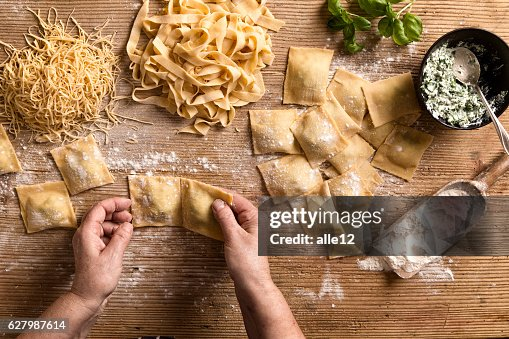
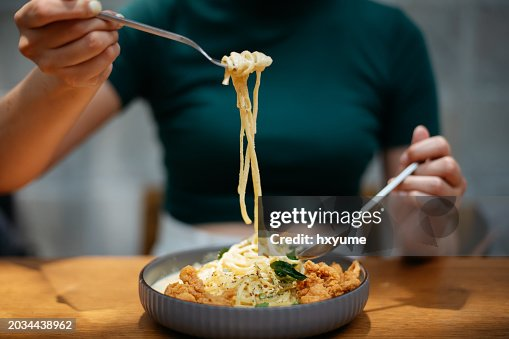

Submitted by: elohel
Buttered noodles are simple to make with your favorite pasta, butter, Parmesan cheese, salt, and pepper for a quick and easy, kid-friendly dish. Fresh herbs and a little lemon juice could be added to amp up the flavor. Perfect to serve either as-is or alongside steak, chicken, or meatballs. It's such a delicious recipe, yet I get many questions on how to make it.

| Prep time | Cook time | Total time | Servings |
|---|---|---|---|
| 5 mins | 15 mins | 20 mins | 8 |
Optional: Broccoli, asparagus, herbs (such as parsley or basil), shrimp, sausage, chicken, minced or powdered garlic, and crushed red pepper.
Basic buttered noodles make a great, carb-loaded side dish for hearty mains. In fact, it's a great substitute for mashed potatoes in almost any situation. For instance, try buttered noodles with one of these tasty ideas:
Garlic Chicken
Easy Meatloaf
Quinoa Black Bean Burgers
If you're planning to serve the buttered noodles as a main dish, try pairing it with one of these light sides:
Roasted Garlic Lemon Broccoli
Classic Restaurant Caesar Salad
Roasted Vegetable Medley
